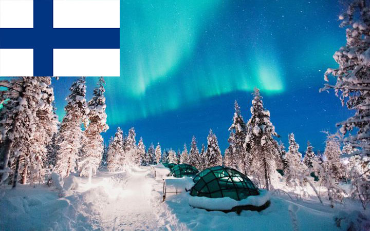
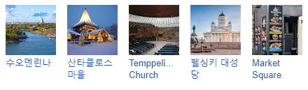

관광명소 :

언어: 핀란드어, 스웨덴어
기후: 12월에는 오후 3시만 되어도 일몰하고 기온은 -15℃ 이하이다. 하지만 내륙으로 들어가면 겨울 기온이 떨어지고 강우량이 적다. 눈이 자주 오는 편이며, 북극처럼 백야 현상이 일어나기도 한다.
국호: 핀란드 공화국 Suomen tasavalta Republiken Finland
면적: 338,145㎢
인구: 5,534,821명 (2018년)
수도: 헬싱키
정치체제: 이원집정부제 *사실상 내각책임제
화폐단위: 유로
환율: 1000KRW = 약 0.74EUR